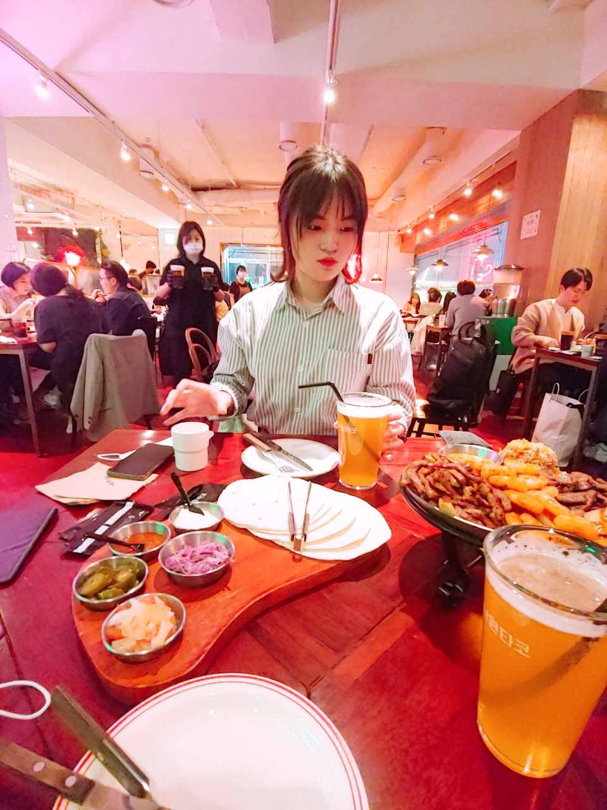

나는 라멘을 좋아한다. 그리고 초밥, 과일, 돈까스, 김밥 등등을 좋아한다. 고기도 좋아하고, 머리쓰는 영화를 보는 것도 좋아한다. 게임은 롤토체스, 노는 건 노래방에 가는 것을 좋아한다. 라인이는 밥을 좋아한다. 별이를 좋아하고, 별이처럼 생선도 좋아한다. 꾸미는 것을 좋아하고, 밖에 돌아다니면서 노는 것을 좋아한다. 게임은 롤을 좋아하는데 유미 원챔이다. 우리는 좋아하는 게 비슷하면서도 다른 점이 많다. 하지만, 서로 좋아한다는 것은 같은 것을 좋아하는 것을 의미하는 것이 아니라 서로 다른 점도 이해해주고 좋아해준다는 것이다.
